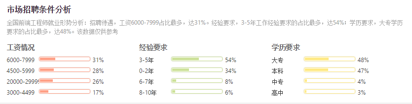

岗位介绍：Web前端开发工程师，主要职责是利用(X)HTML/CSS/JavaScript/DOM/Flash等各种Web技术进行产品的界面开发。制作标准优化的代码，并增加交互动态功能，开发JavaScript以及Flash模块，同时结合后台开发技术模拟整体效果，进行丰富互联网的Web开发，致力于通过技术改善用户体验。
岗位介绍：Web前端开发工程师，主要职责是利用(X)HTML/CSS/JavaScript/DOM/Flash等各种Web技术进行产品的界面开发。制作标准优化的代码，并增加交互动态功能，开发JavaScript以及Flash模块，同时结合后台开发技术模拟整体效果，进行丰富互联网的Web开发，致力于通过技术改善用户体验。
以上图表显示：最低工资2K-3K，最高工资20K-30K。该数据根据企业近一年相关招聘职位发布的薪酬数据统计所得，可能因职位索引稳定性出现偏差，仅供参考。并且在同一个调查中，北京前端开发平均工资：¥9766元/月，上海前端开发平均工资：¥9541元月，最低工资2K-3K，最高工资20K-30K。从以上参考数据上可以看到，前端开发是一个比较有“钱”途的工作，并且薪水增长的幅度比较大，根据自己技能深入的不同程度拥有不同的薪资水平：div+css，js会套用效果的4k到6k，新手熟悉切图，工作效率高的5k左右；有两年工作经验的，会ajax，可以手写代码，就是指常用的单词不用靠编辑器，了解一门后台语言（php最好），不低于8k；对原生js有非常深入的研究，开发组件，框架库之类的，12k+，最低10k。
